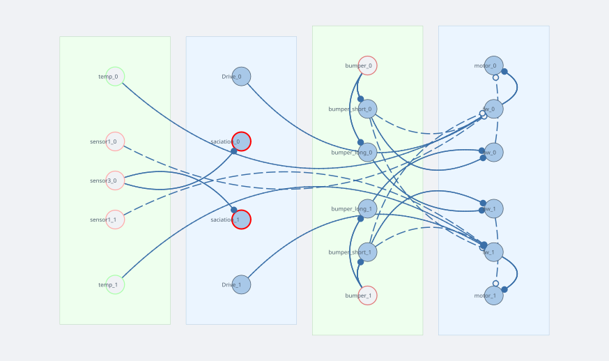

FeedingBrain
FeedingBrain is a hunger-driven vehicle. It cruises through the arena seeking gradient-A patches (food), slows to consume them, and gradually loses interest in food as it fills up — then resumes looking once depleted. It avoids walls using a two-timescale bumper reflex.
Load it from simulation/2d/networks/FeedingBrain.json via the network editor.
Network diagram

Weight notation — +I = identity matrix (ipsilateral, same side), −I = negative identity, +J = fliplr identity (contralateral, crossed), −J = negative fliplr. A dashed violet line is a neuromodulator, not a synaptic weight.
Sensors
| Name | Type | Gradient | Notes |
|---|---|---|---|
temp |
GradientSensor | B | Warmth cue; drives forward attraction unconditionally |
sensor1 |
GradientSensor | A (ReLU) | Food cue; attraction gated by insulin satiety signal |
bumper |
CollisionSensor | — | Bilateral; fires on contact with obstacles |
sensor3 |
InteroceptiveSensor | A | Tracks cumulative food contact; drives satiety |
Layers and connections
Forward path — what makes the robot go
fw is a LeakyLayer that sums three inputs. A constant Drive of 50 keeps the robot moving even in the absence of cues. temp (gradient B) excites fw ipsilaterally — more warmth on the left increases the left motor, which curves the robot toward the warmer side. sensor1 (food, gradient A) inhibits fw ipsilaterally. Because inhibiting the same-side motor turns the robot toward the stimulus, this is an approach response: more food on the right → right motor decreases → robot curves right.
Satiety loop — what makes the robot stop caring about food
sensor3 is an InteroceptiveSensor that accumulates gradient-A exposure over time (very slow rise, τ=10 s, τ_decay=100 s). It drives saciation, which acts as a neuromodulator source: its output is broadcast as insulin on the neuromodulator bus. Insulin suppresses sensor1's output before it reaches fw (pre-synaptic, weight −1.0). As the robot feeds, insulin rises, the food signal shrinks, and the approach drive fades. Once the robot moves away from food, sensor3 decays slowly and hunger returns.
Bumper path — what makes the robot turn away from walls
bumper ──+I──► bumper_short (τ=0.5) ──+I──► bw
──−J──► fw (brakes)
──+I──► bumper_long (τ=1.5) ──+J──► bw
bw (backward drive) feeds into motor with weight −I, subtracting from the forward speed. The two timescales produce different effects:
- bumper_short (fast, τ=0.5 s): same-side excitation of
bw→ sharp turn away from the struck side. Also sends−J(inhibitory crossed) tofw→ brakes both motors on contact. - bumper_long (slow, τ=1.5 s): crossed excitation of
bw→ sustained contralateral push that keeps the robot turning long after the initial contact.
Together they implement the classic escape reflex: touch right side → brake immediately, then arc left over the next second or two.
Behaviour to observe
- Place several gradient-A patches (food) and one gradient-B patch (warmth) in the arena.
- Start the simulation. The robot approaches food patches and slows as it enters them.
- After sustained contact, the
saciationlayer fills and the food attraction weakens. The robot drifts toward warmth instead. - Watch the
saciationoutput in the oscilloscope — it rises slowly, plateaus, then drains once the robot leaves the food area. - Place a wall segment to trigger the bumper reflex. Note how the robot snaps back quickly (
bumper_short) then continues curving away (bumper_long).
Key parameters to tune
| Parameter | Where | Effect |
|---|---|---|
Drive constant value |
layer editor | Baseline cruising speed |
sensor1 weight to fw |
connection editor | Food attraction strength |
saciation τ_decay (100 s) |
layer editor | How quickly hunger returns |
bumper_long τ_decay (1.5 s) |
layer editor | Duration of post-collision turn |
sensor1 scale (40) |
sensor params | Detection range for food patches |